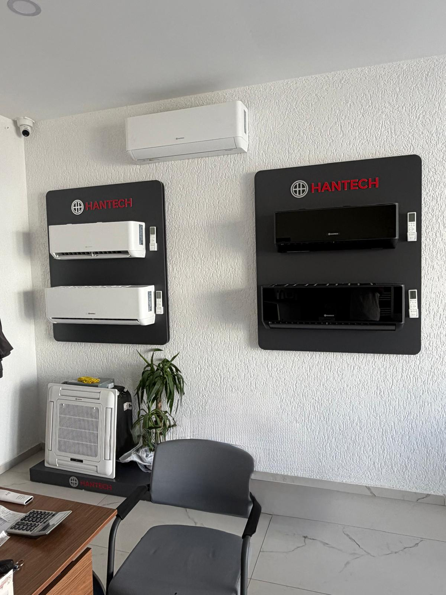

Turgutreis'te
serinlik, doğru
servisle başlar.
Klima montajı, bakımı ve onarımı için Bodrum Yarımadası'nda yanınızdayız. İhtiyacınızı konuşalım, size uygun servis adımını birlikte belirleyelim.
⌖ Akçaalan Mah., Bodrum · Yol tarifi al ↗
İhtiyacınız ne olursa
yanınızdayız.
Klima servisi önceliğimiz. Arıza, bakım veya yeni kurulum için doğru hizmeti bulalım; kapsamı telefonda ya da WhatsApp'ta netleştirelim.
Klima servisi
Turgutreis ve Bodrum'da farklı marka ve model klimalar için servis desteği.
Hizmeti incele ↗Klima tamiri
Soğutmama, su akıtma veya ses gibi sorunlarda arıza tespiti ve onarım.
Hizmeti incele ↗Klima bakımı
Mevsim geçişlerinde temizlik ve cihaz kontrolleri için bakım desteği.
Hizmeti incele ↗Klima montajı
Yeni cihaz kurulumu veya yer değişikliği için keşif ve montaj planlaması.
Hizmeti incele ↗Gaz kontrolü
Soğutma performansı düşen cihazlarda gaz ve olası kaçak kontrolü.
Hizmeti incele ↗Sökme / takma
Taşınma veya yenileme durumlarında klima sökme ve yeniden kurulum.
Hizmeti incele ↗Beyaz eşya servisi
Buzdolabı, çamaşır makinesi, bulaşık makinesi ve diğer ev cihazları için servis talebinizi iletin.
Hizmeti incele ↗Klima markanız
ne olursa olsun.
Hantech, Arçelik, Beko, Altus, Vestel, LG, Daikin, Mitsubishi ve diğer marka klimalar için servis hizmeti.

yerinde görün.DT
Yerel servis.
İşini bilen ekip.
Dost Teknik, Bodrum'da klima ve beyaz eşya servis hizmeti sunan yerel işletmedir. Yaklaşık beş yıldır bölge sakinlerinin cihaz ihtiyaçlarında yanındayız.
Klima montajı, bakım ve onarımın yanı sıra Hantech klima ürünleriyle ilgili destek de sağlıyoruz. Önce cihazınızın durumunu dinliyor, servis kapsamı hakkında açıkça konuşuyoruz.
Bodrum'un
her köşesinde.
Servis talebiniz için bulunduğunuz bölgeyi ve cihazınızın durumunu bize iletin. Ulaşım kapsamı ve uygunluk için doğrudan bilgi alabilirsiniz.
Tüm bölgeleri görüntüle ↗Bodrum / Muğla
Sık sorulan
sorular.
Servis hizmeti hakkında aklınıza takılanları yanıtlayalım. Daha özel bir durum için doğrudan bize ulaşabilirsiniz.
Sorunuz mu var? Arayın ↗Turgutreis'te klima servisi veriyor musunuz?+
Evet. Dost Teknik Akçaalan, Bodrum'dadır ve Turgutreis dahil Bodrum Yarımadası'ndaki servis taleplerini değerlendirir. Adresinizi arayarak veya WhatsApp'tan iletin.
Hangi klima markalarına servis veriyorsunuz?+
Hantech, Arçelik, Beko, Altus, Vestel, LG, Daikin, Mitsubishi ve diğer marka/model klimalar için servis hizmeti sunuyoruz.
Klima bakımı ne zaman yapılmalı?+
Kullanım yoğunluğuna ve ortam koşullarına göre değişebilir. Cihazı yoğun kullanacağınız sezon öncesi bakım ihtiyacını değerlendirmek için bize danışabilirsiniz.
Klimam soğutmuyor; gaz dolumu mu gerekiyor?+
Soğutmama farklı nedenlerden kaynaklanabilir. Önce cihaz kontrol edilmelidir; gaz işlemi gerekiyorsa olası kaçak durumu da değerlendirilir. Kesin teşhis için servis incelemesi gerekir.
Klima montajı veya söküp takma yapıyor musunuz?+
Evet, klima montajı ve sökme/takma taleplerinizi alıyoruz. Cihaz ve montaj yeri hakkında bilgi vererek kapsamı ve planlamayı görüşebilirsiniz.
Çalışma saatleriniz nedir?+
Her gün 09.00–20.00 saatleri arasında telefon ve WhatsApp üzerinden bize ulaşabilirsiniz.
Beyaz eşya servisi de var mı?+
Evet. Buzdolabı, çamaşır makinesi, bulaşık makinesi ve diğer cihazlarla ilgili servis talebinizi bize iletebilirsiniz.
Cihazınız için
konuşalım.
Arıza veya servis ihtiyacınızı kısaca anlatın. Telefonla arayın ya da WhatsApp'tan mesaj gönderin.